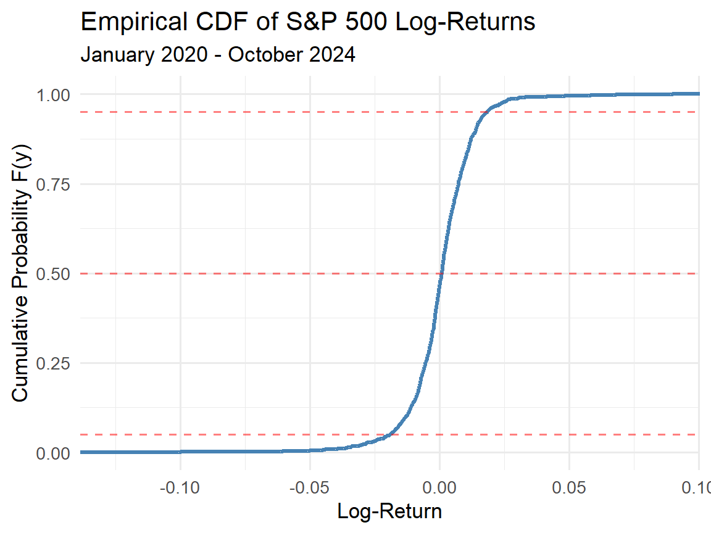
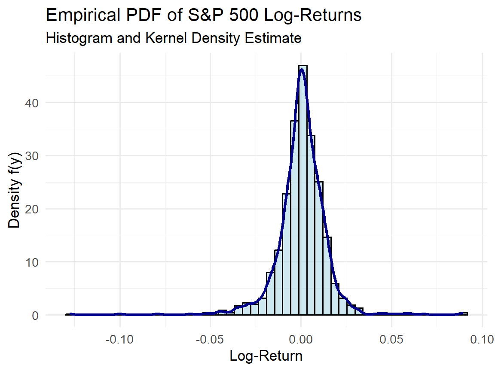

Mathematical Statistics
Continuous Random Variables and Probability Distributions
Samir Orujov, PhD
ADA University, School of Business
Information Communication Technologies Agency, Statistics Unit
2025-11-10
🎯 Learning Objectives
By the end of this lecture, you will be able to:
Define continuous random variables and distinguish them from discrete random variables in financial contexts (such as stock price movements)
Derive and interpret distribution functions \(F(y)\) and probability density functions \(f(y)\) for continuous random variables
Apply properties of distribution and density functions to calculate probabilities over intervals
Compute quantiles and percentiles (including the median) for continuous distributions to support risk analysis
Use real financial data to model continuous random variables and evaluate probabilistic outcomes
📋 Overview
📚 Topics Covered Today
Introduction – Continuous vs discrete random variables with economic examples
Distribution Functions – Definitions, properties, and cumulative distribution interpretation
Probability Density Functions – Derivatives of CDFs and their properties
Quantiles & Percentiles – Median and other measures for financial risk assessment
Applications – Real-world financial data analysis and probability calculations
📖 Introduction to Continuous Random Variables
🔍 Motivation
In probability theory and statistics, random variables model real-world phenomena:
Discrete random variables – Take countable values (e.g., number of defaults in a loan portfolio)
Continuous random variables – Take any value within an interval (uncountably infinite outcomes)
Economic example – Daily stock price movements: prices vary continuously and can fluctuate between any two real values
Key insight – For continuous variables defined over positive real line segments, no single value can be entirely ruled out as a potential outcome
📖 Definition: Distribution Function
📝 Definition 1: Distribution Function
Let \(Y\) denote any random variable. The distribution function of \(Y\), denoted by \(F(y)\), is defined as: \[F(y) = P(Y \leq y) \quad \text{for } -\infty < y < \infty\]
Property 1 – \(F(y)\) represents the probability that \(Y\) takes on a value less than or equal to \(y\) for all possible values of \(y\) (cumulative probability interpretation)
Property 2 – \(F(y)\) is also called the cumulative distribution function (CDF)
Property 3 – The CDF applies to both discrete and continuous random variables
📌 Example 1: Binomial Distribution Function
Problem: Suppose \(Y\) has a binomial distribution with \(n = 2\) and \(p = \frac{1}{2}\). Find the distribution function \(F(y)\).
Solution:
Step 1: For \(y < 0\), no binomial value exists: \[F(y) = P(Y \leq y) = 0\]
Step 2: For \(0 \leq y < 1\), only \(Y = 0\) is included: \[F(y) = P(Y = 0) = \binom{2}{0} \left(\frac{1}{2}\right)^0 \left(\frac{1}{2}\right)^{2} = \frac{1}{4}\]
Step 3: For \(1 \leq y < 2\), include \(Y = 0\) and \(Y = 1\): \[F(y) = P(Y = 0) + P(Y = 1) = \frac{1}{4} + \frac{1}{2} = \frac{3}{4}\]
Step 4: For \(y \geq 2\), all values included: \[F(y) = P(Y = 0) + P(Y = 1) + P(Y = 2) = \frac{1}{4} + \frac{1}{2} + \frac{1}{4} = 1\]
📌 Example 1: Piecewise CDF
The distribution function for the binomial random variable \(Y\) with \(n=2\) and \(p=0.5\) is:
\[F(y) = \begin{cases} 0, & \text{if } y < 0 \\ \frac{1}{4}, & \text{if } 0 \leq y < 1 \\ \frac{3}{4}, & \text{if } 1 \leq y < 2 \\ 1, & \text{if } y \geq 2 \end{cases}\]
Key observations:
This is a step function (discrete distribution)
The CDF jumps at integer values (0, 1, 2)
Between jumps, \(F(y)\) remains constant
🧮 Theorem: Properties of Distribution Functions
Theorem 1: Properties of \(F(y)\)
If \(F(y)\) is a distribution function, then it possesses the following properties:
Property 1: \(F(-\infty) \equiv \lim_{y \to -\infty} F(y) = 0\)
- As \(y\) approaches negative infinity, the probability approaches zero (no outcomes below \(-\infty\))
Property 2: \(F(\infty) \equiv \lim_{y \to \infty} F(y) = 1\)
- As \(y\) approaches positive infinity, the cumulative probability approaches one (all outcomes eventually included)
Property 3: \(F(y)\) is a non-decreasing function of \(y\)
- For any \(y_1 < y_2\), we have \(F(y_1) \leq F(y_2)\) (probabilities cannot decrease as we move right on the number line)
📖 Definition: Continuous Random Variable
📝 Definition 2: Continuous Random Variable
A random variable \(Y\) with distribution function \(F(y)\) is said to be continuous if the distribution function \(F(y)\) is continuous for \(-\infty < y < \infty\).
Interpretation – \(Y\) is continuous if its distribution function forms a smooth, unbroken curve (no jumps or discontinuities)
Distinction from discrete – Discrete variables have step-function CDFs; continuous variables have smooth CDFs
Examples – Stock returns, interest rates, asset prices, portfolio values
📖 Property: Zero Point Probability
Property: Point Probability for Continuous Variables
If \(Y\) is a continuous random variable, then for any real number \(y\): \[P(Y = y) = 0\]
Key implications:
The probability of \(Y\) taking on any exact value is zero
Continuous random variables can assume an uncountably infinite number of values within an interval
Probabilities are meaningful only over intervals, not at individual points
This is why \(P(a \leq Y \leq b) = P(a < Y < b)\) for continuous \(Y\)
📖 Definition: Probability Density Function
📝 Definition 3: Probability Density Function (PDF)
Let \(F(y)\) be the distribution function for a continuous random variable \(Y\). The function \(f(y)\), given by: \[f(y) = \frac{dF(y)}{dy} = F'(y)\] wherever the derivative exists, is called the probability density function (PDF) for \(Y\).
Property 1 – \(f(y)\) is the derivative of the CDF (rate of change of cumulative probability)
Property 2 – Conversely, \(F(y) = \int_{-\infty}^{y} f(t) \, dt\) (CDF is the integral of PDF)
Property 3 – \(f(y)\) itself is not a probability; it is a density (probability per unit length)
🧮 Theorem: Properties of Density Functions
Theorem 2: Properties of PDF
If \(f(y)\) is a probability density function for a continuous random variable, then:
Property 1: \(f(y) \geq 0\) for all \(y\), \(-\infty < y < \infty\)
- The density function is always non-negative (densities cannot be negative)
Property 2: \(\int_{-\infty}^{\infty} f(y) \, dy = 1\)
- The total area under the density curve equals one (total probability is 1)
Verification: To check if \(f(y)\) is a valid PDF, verify both properties above.
📌 Example 2: Finding PDF from CDF
Problem: Given the distribution function: \[F(y) = \begin{cases} 0, & \text{for } y < 0 \\ y, & \text{for } 0 \leq y \leq 1 \\ 1, & \text{for } y > 1 \end{cases}\] Find the probability density function \(f(y)\).
Solution: Take the derivative \(f(y) = \frac{dF(y)}{dy}\):
Region 1: For \(y < 0\), \(F(y) = 0\) (constant), so \(f(y) = 0\)
Region 2: For \(0 \leq y \leq 1\), \(F(y) = y\) (linear), so \(f(y) = 1\)
Region 3: For \(y > 1\), \(F(y) = 1\) (constant), so \(f(y) = 0\)
Result: This is the uniform distribution on \([0,1]\): \[f(y) = \begin{cases} 1, & 0 \leq y \leq 1 \\ 0, & \text{elsewhere} \end{cases}\]
📌 Example 3: Finding CDF from PDF
Problem: Let \(Y\) be a continuous random variable with PDF: \[f(y) = \begin{cases} 3y^2, & 0 \leq y \leq 1 \\ 0, & \text{elsewhere} \end{cases}\] Find the distribution function \(F(y)\).
Solution: Integrate \(F(y) = \int_{-\infty}^{y} f(t) \, dt\):
Region 1: For \(y < 0\): \[F(y) = \int_{-\infty}^{y} 0 \, dt = 0\]
Region 2: For \(0 \leq y \leq 1\): \[F(y) = \int_{-\infty}^{0} 0 \, dt + \int_{0}^{y} 3t^2 \, dt = \left[t^3\right]_0^y = y^3\]
Region 3: For \(y > 1\): \[F(y) = \int_{0}^{1} 3t^2 \, dt = \left[t^3\right]_0^1 = 1\]
📌 Example 3: Result
The distribution function is: \[F(y) = \begin{cases} 0, & y < 0 \\ y^3, & 0 \leq y \leq 1 \\ 1, & y > 1 \end{cases}\]
Key observations:
The CDF is continuous (smooth curve, no jumps)
\(F(y)\) is strictly increasing on \([0,1]\)
The PDF \(f(y) = 3y^2\) is continuous on \((0,1)\), though it jumps to zero at the boundaries
Remark: The distribution function for a continuous random variable must be continuous, but the density function need not be everywhere continuous.
🎮 Interactive: PDF and CDF Visualization
Explore the Relationship: Adjust the parameter \(a\) to see how the PDF \(f(y) = ay^{a-1}\) on \([0,1]\) changes the CDF.
Observations:
When a > 1, density increases toward y=1
When a < 1, density decreases toward y=1
When a = 1, uniform distribution
Code
y_values = d3.range(0, 1.01, 0.01)
pdf_data = y_values.map(y => ({
y: y,
value: y === 0 && a_param < 1 ? null : a_param * Math.pow(y, a_param - 1)
})).filter(d => d.value !== null)
cdf_data = y_values.map(y => ({
y: y,
value: Math.pow(y, a_param)
}))
Plot.plot({
width: 800,
height: 450,
marginLeft: 60,
marginBottom: 40,
x: {
label: "y",
domain: [0, 1],
grid: true
},
y: {
label: "Function Value",
domain: [0, Math.max(5, a_param * 1.2)],
grid: true
},
marks: [
Plot.line(pdf_data, {x: "y", y: "value", stroke: "steelblue", strokeWidth: 3, tip: true}),
Plot.line(cdf_data, {x: "y", y: "value", stroke: "orange", strokeWidth: 2.5, strokeDasharray: "5,5", tip: true}),
Plot.ruleX([0]),
Plot.ruleY([0]),
Plot.ruleY([1], {stroke: "red", strokeDasharray: "3,3", strokeWidth: 1})
],
caption: html`<span style="color: steelblue; font-weight: bold;">━━</span> PDF f(y) | <span style="color: orange; font-weight: bold;">━ ━</span> CDF F(y) | <span style="color: red;">- -</span> Probability = 1`
})📖 Definition: Quantiles and Percentiles
📝 Definition 4: Quantiles
Let \(Y\) denote any random variable. If \(0 < p < 1\), the p-th quantile of \(Y\), denoted by \(\phi_p\), is the smallest value such that: \[P(Y \leq \phi_p) = F(\phi_p) \geq p\]
For continuous \(Y\), \(\phi_p\) satisfies \(F(\phi_p) = p\).
Percentile notation – Some prefer to call \(\phi_p\) the \(100p\)-th percentile of \(Y\)
Median – If \(p = 0.5\), then \(\phi_{0.5}\) is the median of \(Y\)
Financial interpretation – Quantiles are used in Value-at-Risk (VaR) calculations for portfolio risk assessment
📌 Example 4: Computing the Median
Problem: For the random variable \(Y\) from Example 3 with \(f(y) = 3y^2\) on \([0,1]\), find the median.
Solution: The median \(\phi_{0.5}\) satisfies \(F(\phi_{0.5}) = 0.5\).
Step 1: Recall that \(F(y) = y^3\) for \(0 \leq y \leq 1\).
Step 2: Set up the equation: \[(\phi_{0.5})^3 = 0.5\]
Step 3: Solve for \(\phi_{0.5}\): \[\phi_{0.5} = (0.5)^{1/3} = 0.7937\]
Interpretation: The median of \(Y\) is approximately 0.794. This means that \(P(Y \leq 0.794) = 0.5\), so half the probability mass lies below this value (useful for summarizing skewed distributions in finance).
🧮 Theorem: Probability Over Intervals
Theorem 3: Interval Probabilities
If the random variable \(Y\) has density function \(f(y)\) and \(a < b\), then: \[P(a \leq Y \leq b) = \int_{a}^{b} f(y) \, dy\]
Key consequences:
Consequence 1: \(P(a \leq Y \leq b) = F(b) - F(a)\)
- The probability over \([a,b]\) is the difference in CDF values
Consequence 2: For continuous \(Y\): \[P(a \leq Y \leq b) = P(a < Y < b) = P(a \leq Y < b) = P(a < Y \leq b)\]
- Whether endpoints are included or excluded does not matter (since \(P(Y = a) = P(Y = b) = 0\))
📌 Example 5: Finding Valid PDF Constants
Problem: Given \(f(y) = cy^2\) for \(0 \leq y \leq 2\), and \(f(y) = 0\) elsewhere, find the value of \(c\) for which \(f(y)\) is a valid density function.
Solution: For \(f(y)\) to be a valid PDF, it must satisfy: \[\int_{-\infty}^{\infty} f(y) \, dy = 1\]
Step 1: Compute the integral over the support: \[\int_{0}^{2} cy^2 \, dy = 1\]
Step 2: Evaluate: \[c \int_{0}^{2} y^2 \, dy = c \left[\frac{y^3}{3}\right]_0^2 = c \cdot \frac{8}{3} = 1\]
Step 3: Solve for \(c\): \[c = \frac{3}{8}\]
Result: The valid PDF is \(f(y) = \frac{3}{8}y^2\) for \(0 \leq y \leq 2\).
📌 Example 6: Computing Interval Probabilities
Problem: Given \(Y\) with density \(f(y) = \frac{3}{8}y^2\) for \(0 \leq y \leq 2\), find \(P(1 \leq Y \leq 2)\) and \(P(1 < Y < 2)\).
Solution:
Step 1: Compute the integral: \[P(1 \leq Y \leq 2) = \int_{1}^{2} \frac{3}{8}y^2 \, dy \] \[= \frac{3}{8} \int_{1}^{2} y^2 \, dy\]
Step 2: Evaluate: \[\frac{3}{8} \left[\frac{y^3}{3}\right]_1^2 = \frac{3}{8} \left(\frac{8}{3} - \frac{1}{3}\right)\] \[ = \frac{3}{8} \cdot \frac{7}{3} = \frac{7}{8}\]
Step 3: For continuous \(Y\), \(P(Y = 1) = P(Y = 2) = 0\), so: \[P(1 < Y < 2) = P(1 \leq Y \leq 2) = \frac{7}{8}\]
Interpretation: There is an 87.5% probability that \(Y\) falls between 1 and 2.
💰 Case Study: Stock Returns (Real Data)
📈 Stock Return Analysis
Context: Modeling daily log-returns of S&P 500 index as a continuous random variable.
Key Questions:
Can we model stock returns as continuous distributions?
What is the empirical CDF and how does it compare to theoretical distributions?
What are key quantiles (VaR measures) for risk management?
📊 Data Source
We analyze daily S&P 500 log-returns from January 2020 to October 2024.
Source: Yahoo Finance API (via quantmod)
Period: 2020-01-01 to 2024-10-31
Data Quality: Adjusted closing prices
Verification: Cross-checked with multiple financial data providers
💰 Case Study: Data Loading and Processing
Code
[1] "GSPC"Code
Number of observations: 1215 Date range: 18264 to 20026 Code
# Summary statistics
summary_stats <- sp500_clean %>%
summarise(
Mean = mean(LogReturn),
StdDev = sd(LogReturn),
Median = median(LogReturn),
Min = min(LogReturn),
Max = max(LogReturn),
Q5 = quantile(LogReturn, 0.05),
Q95 = quantile(LogReturn, 0.95)
)
knitr::kable(summary_stats, digits = 5,
caption = "Summary Statistics of S&P 500 Log-Returns")| Mean | StdDev | Median | Min | Max | Q5 | Q95 |
|---|---|---|---|---|---|---|
| 0.00048 | 0.01363 | 0.00089 | -0.12765 | 0.08968 | -0.01911 | 0.01828 |
Key insights:
Mean return is slightly positive
Standard deviation shows volatility
5th percentile (VaR) indicates risk
💰 Case Study: Empirical CDF and Density
Code
# Empirical CDF
ggplot(sp500_clean, aes(x = LogReturn)) +
stat_ecdf(geom = "step", color = "steelblue",
size = 1.2) +
labs(title = "Empirical CDF of S&P 500 Log-Returns",
subtitle = "January 2020 - October 2024",
x = "Log-Return",
y = "Cumulative Probability F(y)") +
theme_minimal(base_size = 13) +
geom_hline(yintercept = c(0.05, 0.5, 0.95),
linetype = "dashed", color = "red", alpha = 0.5)
Code
# Empirical PDF (histogram + density)
ggplot(sp500_clean, aes(x = LogReturn)) +
geom_histogram(aes(y = ..density..),
bins = 50, fill = "lightblue",
color = "black", alpha = 0.6) +
geom_density(color = "darkblue", size = 1.2) +
labs(title = "Empirical PDF of S&P 500 Log-Returns",
subtitle = "Histogram and Kernel Density Estimate",
x = "Log-Return",
y = "Density f(y)") +
theme_minimal(base_size = 13)
💰 Case Study: Quantile Analysis
Code
# Compute key quantiles
quantiles <- sp500_clean %>%
summarise(
`1% (VaR 99%)` = quantile(LogReturn, 0.01),
`5% (VaR 95%)` = quantile(LogReturn, 0.05),
`25% (Q1)` = quantile(LogReturn, 0.25),
`50% (Median)` = quantile(LogReturn, 0.50),
`75% (Q3)` = quantile(LogReturn, 0.75),
`95%` = quantile(LogReturn, 0.95),
`99%` = quantile(LogReturn, 0.99)
)
knitr::kable(t(quantiles), digits = 5,
col.names = c("Log-Return Value"),
caption = "Key Quantiles of S&P 500 Log-Returns")| Log-Return Value | |
|---|---|
| 1% (VaR 99%) | -0.03687 |
| 5% (VaR 95%) | -0.01911 |
| 25% (Q1) | -0.00539 |
| 50% (Median) | 0.00089 |
| 75% (Q3) | 0.00735 |
| 95% | 0.01828 |
| 99% | 0.03043 |
Financial interpretation:
VaR 95% (5th percentile): There is a 5% chance daily losses exceed this value (risk measure for portfolio management)
Median: The middle value of the distribution (50% probability above/below)
VaR 99% (1st percentile): Extreme loss threshold for stress testing
📝 Quiz #1: Distribution Functions
What is the value of the distribution function \(F(y)\) as \(y\) approaches positive infinity?
- 1
- 0
- 0.5
- Undefined
📝 Quiz #2: Continuous Random Variables
For a continuous random variable Y, what is the probability that Y equals exactly 5?
- 0
- 0.5
- Depends on the distribution
- Cannot be determined
📝 Quiz #3: PDF Properties
Which of the following must be true for a valid probability density function f(y)?
- The integral of f(y) over all y equals 1
- f(y) can be negative for some values of y
- f(y) must be continuous everywhere
- The maximum value of f(y) cannot exceed 1
📝 Summary
✅ Key Takeaways
Continuous random variables can take any value in an interval; individual point probabilities are zero
Distribution function \(F(y) = P(Y \leq y)\) is cumulative and non-decreasing, with limits 0 and 1 at negative and positive infinity
Probability density function \(f(y) = F'(y)\) satisfies \(f(y) \geq 0\) and \(\int f(y) dy = 1\); probabilities are found by integrating \(f(y)\) over intervals
Quantiles and percentiles (including the median) provide important summary measures for risk assessment in financial applications
Real financial data (such as S&P 500 returns) can be modeled using continuous distributions to compute risk measures like Value-at-Risk
📚 Practice Problems
📝 Homework Problems
Problem 1: Given \(f(y) = 2y\) for \(0 \leq y \leq 1\) and zero elsewhere, verify this is a valid PDF and find \(F(y)\). Then compute \(P(0.25 \leq Y \leq 0.75)\).
Problem 2: For the PDF \(f(y) = ke^{-y}\) for \(y > 0\) and zero elsewhere, find the constant \(k\) that makes this a valid density, and determine the median.
Problem 3: A stock’s daily log-return is modeled by \(f(y) = \frac{1}{2}\) for \(-0.02 \leq y \leq 0.02\). Find the probability that the return is between -0.01 and 0.01, and find the 5th percentile (VaR 95%).
Problem 4: Using the real S&P 500 data from the case study, compute the interquartile range (IQR) and interpret it in the context of financial risk.
👋 Thank You!
📬 Contact Information:
Samir Orujov
Assistant Professor
School of Business
ADA University
📧 Email: sorujov@ada.edu.az
🏢 Office: D312
⏰ Office Hours: By appointment
📅 Next Class:
Topic: Expected Value and Variance of Continuous Random Variables
Reading: Review properties of integrals and moments
Preparation: Refresh calculus (integration by parts)
⏰ Reminders:
✅ Complete practice problems
✅ Review quantile computations
✅ Work hard and stay curious!
❓ Questions?
💬 Open Discussion (5 minutes)
Discussion Point 1: How do continuous distributions differ from discrete distributions in practical financial modeling?
Discussion Point 2: Why is the median sometimes preferred over the mean for skewed distributions (e.g., stock returns during crises)?
Discussion Point 3: How can quantiles be used to set risk limits in portfolio management?
Discussion Point 4: What are the limitations of using historical data to estimate distribution functions?

Mathematical Statistics - Continuous Random Variables